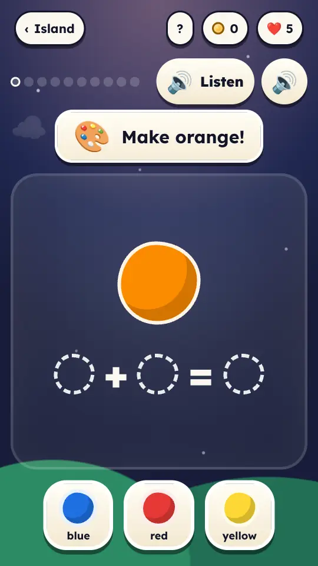

All labs › Colour › Colour Mixing
Colour lab · Kesar's Colour Studio
Colour Mixing
रंग मिलाओ · दो रंगों से नया रंग
Mix two paints to make the colour shown at the top, such as orange or green.
- Colour
- Explorer · ages 4–7
- 10 levels
- English · हिंदी
- Free, no sign-up

How it works
Two colours make a new one
- Look at the big colour at the top. That is the one to make.
- Tap two paints to mix them.
- Red and yellow make orange. Blue and yellow make green.
Explorer labs read instructions aloud, and a wrong try never costs anything.
Why it works
The big idea
Paint colours are like friends who make something new together: red and yellow make orange, blue and yellow make green, red and blue make purple.
What children learn
Skills in this lab
- Primary colours: red, yellow and blue
- Making orange, green and purple
- Naming colours
For parents and teachers
This lab is in the Explorer band (ages 4–7). Each player picks a band, and sees only the labs made for it.
Curio Island is free in the browser with no sign-up. Progress is saved on this device only. Ads are child-safe and non-personalised, and never appear inside a lab.
Part of Kesar's Colour Studio on the island. 10 levels to finish.